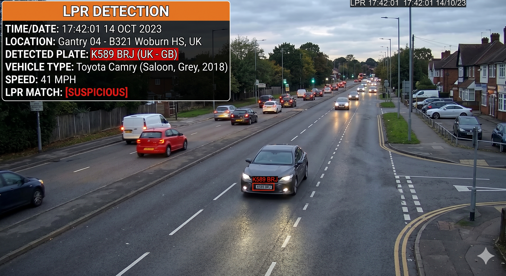

ACT — Map (refined): new SVG street map · LPR camera feed · stolen vehicle intercept
Operational Map · LPR Intercept
Inline SVG street map · 6 units on roster · LPR camera preview
MEMORIAL PARK
BUFFALO BAYOU
I-10 KATY FWY
WESTHEIMER RD
RICHMOND AVE
MEMORIAL DR
MONTROSE
N
map
OPERATIONAL MAP · LIVE
UNITS · 6
LPR · 8
⬤ STOLEN VEHICLE
directions_car
STOLEN · 7JKY442
local_police
12-CHARLIE
local_police
08-BRAVO
local_police
04-ALPHA
local_hospital
EMS-7
pets
K9-2
local_police
11-ECHO

warning
LPR HIT · STOLEN VEHICLE CONFIRMED
PIP
EXPAND
LIVE UNITS · 6
SYNCING
local_police
12-CHARLIE
J. Reyes · Primary intercept
2:48
to intercept
local_police
08-BRAVO
M. Torres · Backup
3:42
to intercept
local_police
04-ALPHA
D. Alvarez · Holding
4:20
if dispatched
pets
K9-2
Handler · Pursuit support
5:10
to intercept
local_hospital
EMS-7
Standby · Pursuit safety
6:30
if dispatched
local_police
11-ECHO
P. Gomez · Available
7:15
if dispatched
POLICE
K9
EMS
STOLEN VEHICLE
100 FT